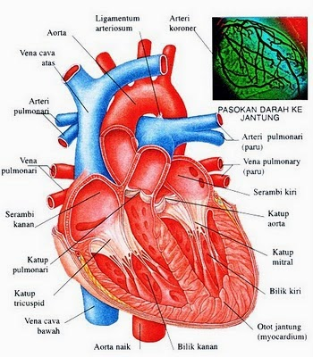
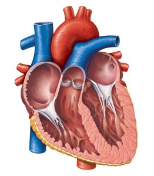
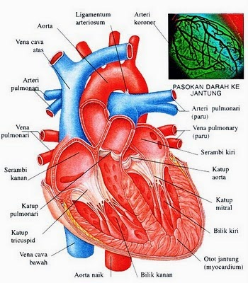
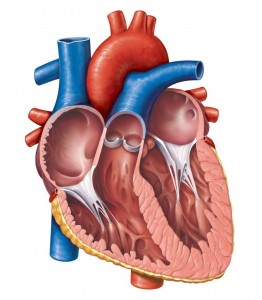

Penyakit Jantung - Gejala, Penyebab, Pengobatan - Klikdokter.com
2021.06.08 01:06
Sukses
klikdokter
Home Penyakit Belanja Sehat Obat SpesialisGigi & Mulut
drg. Sri Angky Soekanto Ph.DKanker
Prof. dr. Muchlis Ramli Sp.B.K onkMata Sehat
dr. Doddy P. Partomihardjo Sp. MKesehatan Kewanitaan
dr. Dyah Novita AnggrainiAlergi Anak
dr. Caessar Pronocitro M.Sc Sp.AAnti Jamur
Dr. Melyarna PutriAnti Nyeri
dr. Jessica FlorenciaBebas Anemia
dr. Anita Amalia SariBerat Badan Ideal
dr. Nadia OctaviaDiabetes
dr. Tri Juli Edi Tarigan Sp. PDGizi
dr. Fiastuti Witjaksono MSc. MS. SpGKGizi Balita
dr. Caessar Pronocitro M.Sc Sp.AHigienitas Keluarga
Prof. dr. Amin Subandrio W.K.Phd. SpMKKebidanan & Kandungan
dr. Grace ValentineKecantikan
DR. dr. Tjut Nurul Alam Jacoeb Sp KKKolesterol
dr. Vito A. Damay Sp.JP M.Kes FIHA FICAKulit Sehat
DR. dr. Tjut Nurul Alam Jacoeb. SpKKPencernaan Sehat
dr. Mega PutriPola Asuh Sehat
dr. Ratih Puspita Sp.ARumah Sehat
dr. Sara Elise Wijono. MRes Lihat Selengkapnya Rubrik Spesialis Live Chat Info Sehat Berita Kesehatan Profil Sehat Gaya HidupAnak Sulit Bangun Sahur, Ini Cara Menyikapinya!
Membangunkan anak sahur di bulan puasa memang jadi tantangan tersendiri. Tenang, simak berbagai tips membangunkan anak sahur berikut ini.
BacaBerapa Lama Waktu Hubungan Seks yang Normal?
Mengapa Menelan Air Liur Tidak Bisa Hilangkan Rasa Haus?
Berapa Kadar Kolesterol Normal Orang Dewasa?
Berbagai Penyebab Rambut Rontok pada Remaja
Lihat Selengkapnya Berita KesehatanReisa Broto Asmoro: Dokter Cantik yang Menginspirasi
Nama dr. Reisa Broto Asmoro semakin dikenal masyarakat setelah menjadi pembawa acara Dr. OZ Indonesia. Inilah sosoknya.
BacaGia Pratama: Dokter Itu Profesi Pengabdi Kemanusiaan
dr. Mangku Sitepoe: Berpegang Teguh pada Prinsip Altruisme
Doddy Partomihardjo: Mengubah Pola Pikir Masyarakat tentang Kesehatan
Dari Dokter Hingga Kepala BKKBN, Ini Cerita Singkat dr. Hasto Wardoyo
Lihat Selengkapnya Profil SehatDaftar Manfaat Sehat Minum Kopi Setiap Hari
Kopi mungkin sudah jadi minuman wajib bagi sebagian orang. Apa sebenarnya manfaat kopi bagi kesehatan? Simak manfaat minum kopi di sini.
BacaOrang Perfeksionis Berisiko Mudah Lelah, Benarkah?
Ini Akibatnya Bila Sikat Gigi Hanya Sekali Sehari!
Kram Kaki Saat Hamil, Ini Solusi Ampuh untuk Mengatasinya
Cara Mengatur Napas yang Baik Saat Olahraga
Lihat Selengkapnya Gaya Hidup Tanya Dokter Video Download Aplikasi Home Penyakit Penyakit JantungPenyakit Jantung
Penyakit Semua Tentang Artikel Pengertian Gejala Penyebab Diagnosis Pengobatan PencegahanPengertian Penyakit Jantung
Penyakit jantung merupakan istilah umum dari semua penyakit yang menyerang jantung. Ada banyak jenis penyakit jantung, namun yang paling sering ditemui adalah:
Penyakit jantung koroner, yaitu penyakit jantung yang terjadi akibat penyempitan pembuluh darah di jantung. Penyakit jantung bawaan, merupakan masalah jantung yang ditemukan sejak bayi. Permasalahan yang paling sering terjadi adalah kebocoran katup jantung. Aritmia, yaitu gangguan irama jantung yang menyebabkan denyut jantung tidak normal. Gagal jantung, yaitu kegagalan otot jantung untuk memompakan darah secara memadai ke seluruh tubuh. Infeksi jantung (endokarditis), yaitu infeksi pada lapisan dalam jantung.Artikel Lainnya: Proses Penyembuhan Pasca Serangan Jantung
Gejala Penyakit Jantung
Gejala penyakit jantung juga sangat beragam, tergantung dari jenis penyakit jantung yang dialami. Pada penyakit jantung koroner, gejala utamanya adalah nyeri dada.
Dapat pula disertai dengan sesak napas, nyeri di lengan kiri atau di rahang. Pada kondisi aritmia, gejala sakit jantung yang dapat muncul adalah berupa keluhan berdebar-debar, rasa tidak nyaman di dada, sesak napas, sensasi melayang, hingga pingsan.
Bayi yang mengalami sakit jantung bawaan dapat menunjukkan gejala berupa terlihat sesak dan membiru saat menangis atau menyusu, bengkak di sekitar mata dan di tungkai, berat badan tidak bertambah.
Sementara gejala gagal jantung bisa berupa sesak napas yang makin berat saat beraktivitas, sesak napas yang makin berat saat berbaring, tungkai bengkak, dan perut membesar.
Infeksi jantung (endokarditis) menunjukkan gejala berupa demam, denyut jantung tidak teratur, sesak napas, bengkak di perut atau tungkai, dan batuk-batuk.
Artikel Lainnya: Tips Bebas Stres bagi Wanita agar Jauh dari Penyakit Jantung
Penyebab Penyakit Jantung
Terdapat berbagai macam penyebab penyakit jantung yang tergantung pada jenis penyakit jantung yang dialami.
Penyakit jantung koroner umumnya disebabkan karena gaya hidup yang tidak sehat, seperti mengonsumsi makanan tinggi karbohidrat atau lemak, obesitas, jarang melakukan aktivitas fisik, serta sering terpapar asap rokok.
Penyakit jantung bawaan tidak diketahui dengan pasti penyebabnya. Namun terdapat beberapa kondisi yang menyebabkan bayi lebih rentan mengalami masalah ini. Di antaranya, ibu terinfeksi rubella saat hamil, ibu mengonsumsi obat tertentu saat hamil, atau adanya kelainan gen.
Aritmia sering disebabkan oleh kelainan bawaan, yaitu adanya otot jantung yang mati karena penyakit jantung koroner, konsumsi alkohol atau kafein yang berlebihan, stres, atau efek samping obat tertentu.
Gagal jantung umumnya disebabkan oleh penyakit jantung koroner , infeksi, atau adanya kelainan katup jantung. Sedangkan infeksi jantung umumnya disebabkan oleh virus atau bakteri. Namun yang paling sering menjadi penyebab adalah serangan bakteri Streptococcus beta hemolyticus grup A.
Artikel Lainnya: Mengapa Penyakit Jantung Lebih Rentan Menyerang Pria?
Diagnosis Penyakit Jantung
Untuk memastikan adanya gangguan jantung, ada beberapa pemeriksaan yang diperlukan, tergantung jenis penyakit jantungnya. Secara umum, pemeriksaan untuk memastikan diagnosis penyakit jantung adalah:
Elektrokardiogram (EKG), yaitu pemeriksaan untuk melihat aliran listrik dan irama jantung. Pemeriksaan ini dilakukan dengan cara memasang beberapa sadapan (berbentuk seperti penjepit) ke tubuh pasien. EKG merupakan pemeriksaan yang paling umum dilakukan pada mereka yang diduga mengalami gangguan jantung. Ekokardiografi, yaitu pemeriksaan untuk melihat bagian dalam jantung, fungsi pompa jantung, dan fungsi katup jantung. Pemeriksaan ini terutama dilakukan pada mereka yang diduga mengalami gagal jantung, penyakit jantung bawaan, dan kelainan katup jantung. Treadmill test, yaitu pemeriksaan irama jantung yang dilakukan sembari pasien melakukan aktivitas fisik (treadmill). Pemeriksaan ini umumnya dilakukan untuk mendeteksi dini penyakit jantung koroner. Angiografi, yaitu pemeriksaan jantung yang dilakukan dengan cara memasukkan ‘kamera’ ke dalam pembuluh darah jantung untuk melihat adanya sumbatan di dalam pembuluh darah jantung.Artikel Lainnya: Inilah 7 Hal yang Menjadi Penyebab Sakit Jantung pada Wanita
Pengobatan Penyakit Jantung
Pengobatan penyakit jantung koroner bertujuan untuk mencegah terjadi sumbatan lebih berat di pembuluh darah jantung. Hal ini dilakukan dengan memberikan penderitanya obat pengencer darah (seperti aspirin atau clopidogrel) dan nitrat.
Bila sumbatan sudah sangat berat, kadang tindakan membuka sumbatan di pembuluh darah melalui percutaneous coronary intervention (PCI) diperlukan.
Pengobatan penyakit jantung aritmia bertujuan untuk mengendalikan irama jantung. Hal ini dilakukan dengan memberikan obat-obatan yang mempengaruhi irama jantung, seperti beta bloker, diltiazem, verapamil.
Bila hal itu tidak dapat memperbaiki kondisi aritmia yang dialami, maka tindakan ablasi jantung untuk mengontrol aliran listrik yang tidak sesuai biasanya diperlukan.
Penyakit jantung bawaan umumnya diatasi dengan tindakan pembedahan untuk menutup kebocoran pada katup atau sekat jantung.
Pengobatan gagal jantung dilakukan dengan memberikan obat untuk mengurangi cairan di dalam tubuh untuk menurunkan kerja jantung. Dokter juga akan memberikan obat untuk meningkatkan kekuatan jantung dalam memompa darah.
Endokarditis diobati dengan pemberian antibiotik yang sesuai dengan jenis kuman yang menginfeksi. Selain itu diberikan pula antiradang dan pengencer darah.
Artikel Lainnya: Serangan Jantung, Penyakit Mematikan yang Menghantui Siapa Saja
Pencegahan Penyakit Jantung
Tidak semua penyakit jantung dapat dicegah, misalnya penyakit jantung bawaan. Namun penyakit jantung koroner, gagal jantung, aritmia umumnya bisa dicegah dengan cara:
Tidak merokok dan menghindari paparan asap rokok Memeriksa tekanan darah, gula darah, dan kolesterol secara berkala Melakukan latihan fisik (misalnya jogging, bersepeda, berenang) selama setidaknya 30 menit setiap hari. Mengonsumsi makanan tinggi serat, rendah gula, dan rendah lemak ArtikelNyeri Dada sebelah Kiri, Apakah Penyakit Jantung?
Berbagai Gejala setelah Pasang Ring Jantung
Tanda Penyakit Jantung
Nyeri Dada Kiri
Pisang Ternyata Juga Bermanfaat untuk Kesehatan Jantung
Kontak Redaksi Karir DisclaimerCopyright © 2021 klikdokter.com KLY KapanLagi Youniverse All Rights Reserved
Liputan6.com Bintang.com Bola.com Vidio.com Bukalapak.com- Penyakit Penyakit Jantung - Gejala, Penyebab, Pengobatan .
- Jantung - Gejala, Penyakit, dan Cara Mengobati | Halodoc.com
- Jangan Abaikan Gejala-Gejala Jantung Bengkak Berikut Ini .
- 11 Gejala Penyakit Jantung yang Bisa Terlihat di Kulit dan .
- Jantung - Wikipedia bahasa Indonesia, ensiklopedia bebas
- Penyakit Jantung - Pengertian, Gejala, Penyebab, Faktor .
- Mengatasi Sakit Jantung dan Serangan Jantung – Pemerintah .
- Waspada dan Kenali Lebih Jauh Ciri-Ciri Sakit Jantung .
- Patut waspada, inilah 4 ciri-ciri penyakit jantung - Kesehatan
- Tempat-Tempat Nyeri Pada Gangguan Jantung - Direktorat .
- Penyakit Penyakit Jantung - Gejala, Penyebab, Pengobatan .
adalah organ terpenting dalam tubuh manusia dan mempunyai ukuran sebesar kapalan tangan. berfungsi memompa dan menyebarkan darah . - Jantung - Gejala, Penyakit, dan Cara Mengobati | Halodoc.com
Di Indonesia sendiri, penyakit kardiovaskuler, stroke dan penyakit koroner adalah penyebab utama kematian yang menyebabkan lebih dari 470.000 . - Jangan Abaikan Gejala-Gejala Jantung Bengkak Berikut Ini .
(bahasa Latin: cor) adalah sebuah rongga, rongga organ berotot yang memompa darah lewat pembuluh darah oleh kontraksi berirama yang berulang. - 11 Gejala Penyakit Jantung yang Bisa Terlihat di Kulit dan .
7 hari yang lalu — - Jantung - Wikipedia bahasa Indonesia, ensiklopedia bebas
Tingginya angka kematian akibat penyakit , khususnya serangan , selayaknya menjadi perhatian masyarakat dan petugas kesehatan sehingga . - Penyakit Jantung - Pengertian, Gejala, Penyebab, Faktor .
Gejala paling umum dari penyakit coroner adalah angina atau angina pectoris yang juga dikenal sebagai nyeri dada. Angina dapat digambarkan . - Mengatasi Sakit Jantung dan Serangan Jantung – Pemerintah .
Gagal , merupakan suatu kegagalan otot untuk memompakan darah secara memadai ke seluruh tubuh. Aritmia, merupakan suatu gangguan . - Waspada dan Kenali Lebih Jauh Ciri-Ciri Sakit Jantung .
3 hari yang lalu — - Patut waspada, inilah 4 ciri-ciri penyakit jantung - Kesehatan
16 Okt 2020 — - Tempat-Tempat Nyeri Pada Gangguan Jantung - Direktorat .
7 Mei 2021 —
adalah organ terpenting dalam tubuh manusia dan mempunyai ukuran sebesar kapalan tangan. berfungsi memompa dan menyebarkan darah .
Di Indonesia sendiri, penyakit kardiovaskuler, stroke dan penyakit koroner adalah penyebab utama kematian yang menyebabkan lebih dari 470.000 .
(bahasa Latin: cor) adalah sebuah rongga, rongga organ berotot yang memompa darah lewat pembuluh darah oleh kontraksi berirama yang berulang.
7 hari yang lalu —
Tingginya angka kematian akibat penyakit , khususnya serangan , selayaknya menjadi perhatian masyarakat dan petugas kesehatan sehingga .
Gejala paling umum dari penyakit coroner adalah angina atau angina pectoris yang juga dikenal sebagai nyeri dada. Angina dapat digambarkan .
Gagal , merupakan suatu kegagalan otot untuk memompakan darah secara memadai ke seluruh tubuh. Aritmia, merupakan suatu gangguan .
3 hari yang lalu —
16 Okt 2020 —
7 Mei 2021 —
 


